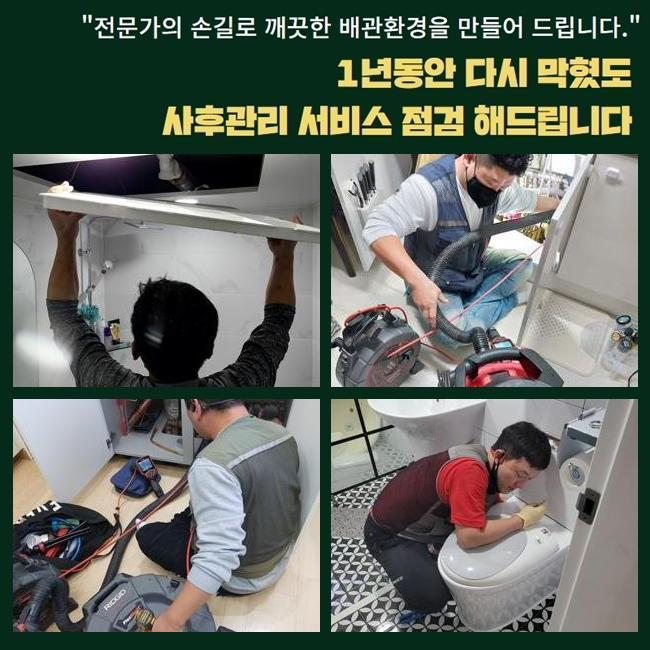
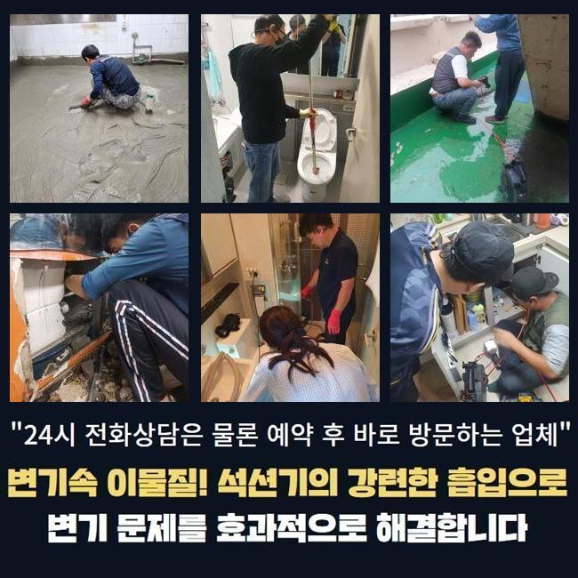
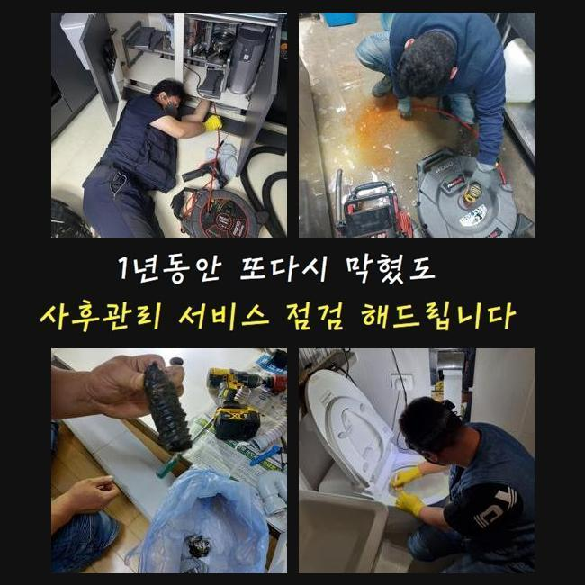
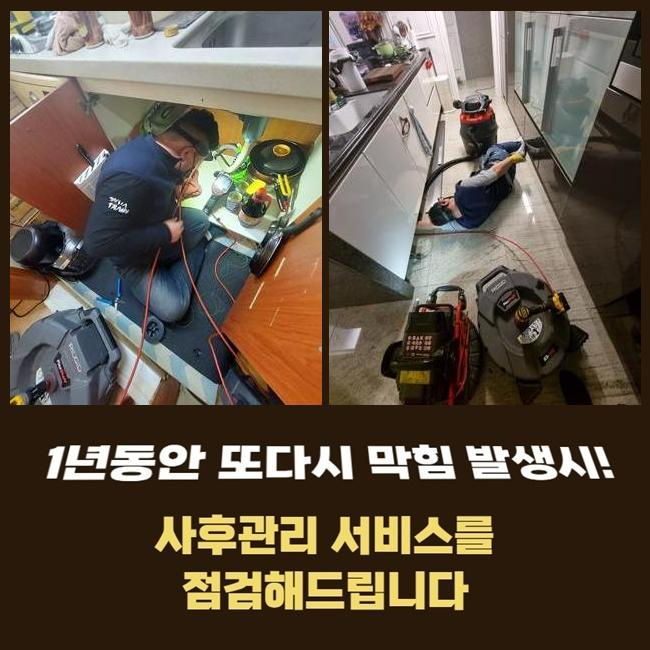
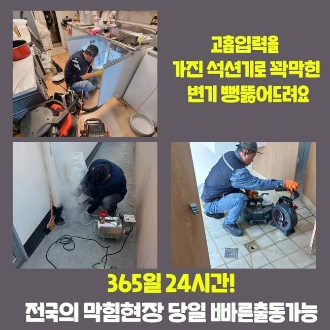
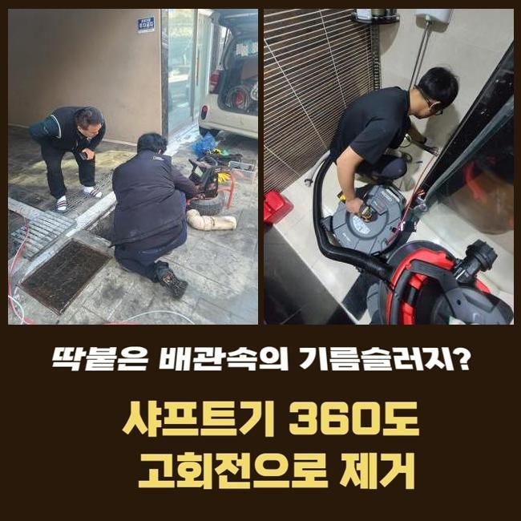
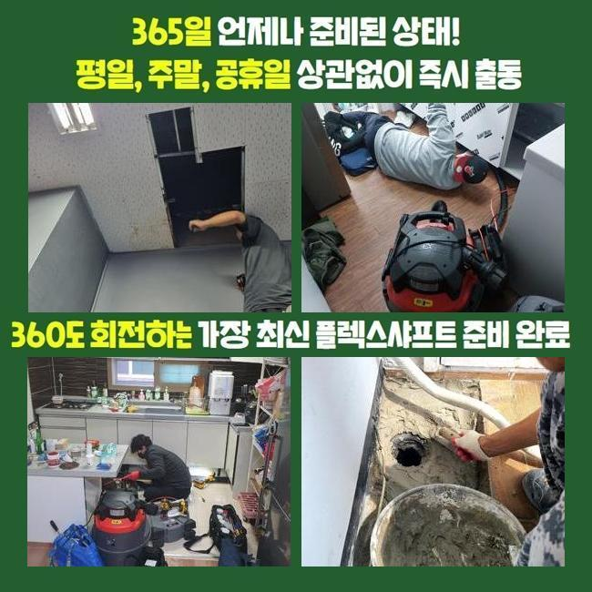

🏠 양평 서종면싱크대배수관막힘 양동면 하수구청소장비 통수전문
용인 싱크대막힘 전문 시공 후기

📋 작업 개요
- 위치: 용인
- 서비스 유형: 싱크대막힘, 하수구막힘, 배관막힘, 누수수리, 역류해결, 뚫는업체, 배관청소, 악취차단
- 작업 일시: 2024. 12. 1. 22:38
- 업체명: 하수구수사대 (010-5615-2118)
🔍 문제 상황
양평 서종면싱크대배수관막힘 양동면 하수구청소장비 통수전문
욕실바닥의 배수구가 고장나버려서 하수가 경로로 원활히 이동하지 못하는 상황이 빚어졌습니다
사안에 대한 맞춤 조치를 실시하려고 의뢰지를 지체 없이 내방했습니다
빌라 아파트나 상업시설 어디든지 마다하지 않고 방문을 하여 완성도 높은 개선해드리려 노력하는 중입니다
넓은 면적의 시설물 속 분포되어있는 배관 경로를 모두 검토하는 단계도 손쉽게 수행해 드릴 수 있어요
상부에 덮힌 필터를 없애고 내부구조를 확인했는데 각양각색의 오염물질들이 잔뜩 엉겨붙어있는 상황이더라고요
막힘을 탄생시킨 동기를 파악해야 작업이 편하므로 가져간 촬영기기를 주입시켜 안쪽 상황을 조사했습니다
무심코 유출된 모발이나 피부 껍질같은 오물들이 관로에 누적되어 장애가 초래된 듯 했습니다
배수구의 한 구간만 막혀도 심한 장애요소가 되어서 여려가지 불편함과 불쾌함을 낳을 수도 있으며 빠른 조치를 못한다면 역류되거나 관로 파괴같은 더 처리하기 힘든 일로 전락할 수도 있습니다
다목적으로 이용한 생활하수는 하수 통로를 거쳐가니까 언제나 배수관의 원만한 작동이 한결같아야 합니다
당장 곤란해진 하수관을 어찌 해결봐야할지 전혀 모르겠다면 전문업체와의 자세한 상담을 하신 뒤에 방문 요청을 하셔야해요

🔎 원인 분석
💡 전문가 진단: 정밀 진단 장비를 사용하여 슬러지의 고착 여부를 판명하고 타격/세척 작업을 실시했습니다.
무슨 막힘이라도 뚫어내려고 종류별 뚫는 특수 기구를 라인업으로 소장하고 있습니다
배수관에 찰랑찰랑 고인 잔수와 굵은 물질을 없애기위해서 진공청소기같은 석션기와 전동 배관청소기를 사용해요
모발이나 세제 잔량의 뭉치를 없애주고 난 다음에는 부유하는 작은 입자들과 접착성 물질을 삭제하려고 파편화를 시키는 샤프트나 하수 청소제를 적용할 때도 있습니다
여러 도구를 접목하여 말끔하게 처리를 끝내면 산뜻하게 지속할 수 있게 됩니다
내시경 카메라를 삽입해서 자세하게 관찰해보니 머리카락과 단단한 석회 물질이 견고하게 합체가 된 상태였습니다
혹시나 하는 마음에 카메라를 깊이 진출을 시켜 보았더니 거대해진 이물질들이 연속적으로 발견이 되었고 반복하다보니 어떤 영역에서 아마 주된 요인이 되었을 고형화된 기름을 발견했어요
해당 부분을 정리정돈해서 막힌 쪽을 개방하여 막힘이 생기기 전처럼 운영되게끔 해주었습니다
욕실 내부에는 탁한 물이 정상적으로 빠지지 못하여 바닥에 흥건하게 고인 상태였고 악취와 습기도 진동하는 모습을 띠고 있었습니다
하수구가 차단되는 일은 위생 저해나 누수같은 극단적인 상황으로 연결될 수 있으니 빠른 조치가 들어가야 합니다
샤프트는 갈고리같은 체인사슬이 연결된 노즐인데 배관 곳곳에 자리한 유분덩어리를 능률적으로 삭제시킬 수 있는 힘을 가졌어요
본 장치는 청소를 위하여 강하게 돌아가기 때문에 배관을 때리지 않게끔 주의 깊은 시공이 필요해요
세심한 조절 능력이 있어야 감당할 수 있는 기기이니 이용 경험이 일천한 사람들이라면 하자없이 쓴다는 건 힘든 일이죠!

🔧 작업 과정
이론으로만 배운 분들이 작업하시다가 파이프에 잦은 접촉을 하다가는 크랙까지 발생할 염려가 있으니 장비를 다뤄온 업력이 얼마인지 철저히 체크하는 게 유익합니다
용해를 도와줄 액상을 안에다 조심스럽게 부은 다음에 살펴보면서 몇 분 기다려서 거품이 솟아오르는 걸 체크해주고 중화를 해줬어요
다시 장치를 들어서 같은 작업을 되풀이하면서 물길 위에서 굳어진 석회층이 소멸되게끔 최선을 다했어요
분쇄된 석회 알갱이가 외부로 방출되어져 나오는 상황도 벌어지곤 하는데 내측에 석회가 돌덩이처럼 충만하게 머무르고 있따면 파동때문에 빠지는 현상이니 우려할 부분은 아닙니다!
샤프트로 갈아준 이후에 흡입기인 석션을 다시 써서 잘게 썰린 이물질들을 잔여물없이 흡수해버려요
석션의 진공의 힘으로 차올랐던 물은 한순간에 석션기 몸체로 들어가서 배수구가 잘 보이게 만드는 작업을 완수할 수 있었습니다
배수구 뚜껑을 열고 입구부분을 관측해보았습니다
파편화된 물질들이 압박받아 솟아오르지 못하게 섬세하게 행동 하나하나를 실시하며 촬영기기로 배수로의 상황을 인식하실 수 있도록 정보를 안내해 드렸습니다
배관용 내시경을 쓰면 뚜렷한 시야를 확보해주면서 완성도 높은 청소를 진행할 수 있어요
이 관찰과정을 스킵하면 막힌 사유를 알기도 어렵고 작업 중 나타나는 변수에 유연하게 대처하기가 힘듭니다
어떤 종류의 현장이라고 할지라도 카메라를 신속히 적용할 수 있는 장비보유력이 중요한 것입니다
저희는 항상 내시경을 통해 단계를 책임지고 수행하여 관측 결과를 바탕으로 철저하게 정화작업을 끌어나가고 있어요
이런 촬영장비로 업무를 실시하면 더 꼼꼼하면서 그리 오래 걸리지 않아도 문제를 탈피하고 정상배관을 되찾기 쉬워집니다
거의 매작업마다 내시경을 선행하여 작동시켜서 작업에 들어가나 오늘은 한눈에 확인하더라도 카메라 줄이 들어갈 틈이 없어보여서 청소장비부터 가동해서 진행도를 평가하기 위한 목적으로 이용해줬던 현장이었네요
내시경은 워낙 작기도 하고 튼튼한 노즐 위에 달린 카메라로 협소하고 비좁은 배관 안을 밝고 선명하게 볼 수 있도록 허용합니다
뚫음을 위한 단계들을 슬슬 매듭짓는 시기에 정비 완료된 배관에 내시경을 저 안쪽까지 내려보냈더니 아니나다를까 부착된 접착력이 있는 슬러지를 새롭게 발굴했어요
모니터를 통하여 정화되는 상황을 계속 봐가며 미미한 입자도 석션기로 보기좋게 없애주었습니다
잘게 쪼개는 일이 무의미한 상황에서는 플렉스 샤프트를 과도하게 쓰지 않고 결합이 풀린 개별 오염원들을 석션통 속으로 모아서 작업을 완수할 수 있었습니다
악취문제는 나아졌는지 보기위해 트랩의 상태를 체크했어요


✅ 작업 완료
트랩을 뒤집어서 확인하니 많은 먼지들이 응축되어서 배출을 방해하는 양상을 지니고 있었네요
새걸로 재설치를 해드리고 정리정돈까지 끝낸 이후에 고객님께 말씀을 드렸습니다
이러한 철저한 작업으로 화장실의 통수 곤란이 완전하게 사라졌고 가까운 미래에 재발되거나 냄새가 올라오는 일들도 방지할 수 있게 됐습니다
현장이 어디건 하수구 고장 사태를 기술적으로 말끔히 척결해 드릴테니 연락주세요
하수구에 대한 여러 이슈가 빚어진다면 초기에 맡겨주시면 최선을 다할게요




⚠️ 베란다 누수 및 방수 관리 방법
- ✅ 비가 많이 올 때 창틀 주변이나 아래층 천장에 얼룩이 생기는지 정기적으로 확인해 보세요.
- ✅ 우수관 주변 실리콘 마감이 들뜨거나 깨진 틈새가 있는지 손상 여부를 수시로 체크하세요.
- ✅ 베란다 바닥 타일의 줄눈(메지)이 소실되면 그 틈으로 물이 침투하여 누수가 유발됩니다.
- ✅ 누수 의심 증상 발견 시 방치하면 아래층 손실이 커지므로 즉시 전문가의 진단을 받으십시오.
💡 핵심 정리
- 확실한 장비 작업(내시경 점검 및 샤프트 스케일링)으로 원인을 뿌리 뽑습니다.
- 작업 후 1년 이내에 동일한 부위 재발 시 100% 무상 A/S 서비스를 보장합니다.
- 서울 · 경기 · 인천 전 지역에 24시간 언제든 긴급 출동할 수 있도록 항시 대기 중입니다.
❓ 자주 묻는 질문 (FAQ)
🚨 용인 싱크대막힘 문제로 고민이신가요?
정확한 원인 진단과 확실한 시공으로 재발 없는 해결을 약속드립니다.
24시간 긴급 출동 | 서울 · 경기 · 인천 전지역 | 1년 내 재발 시 무상 A/S